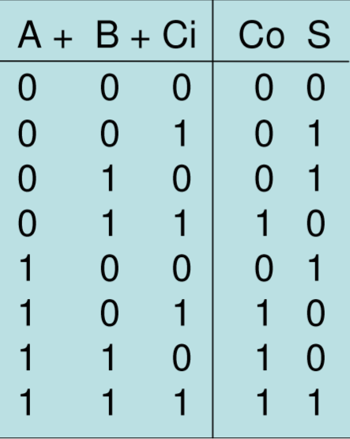
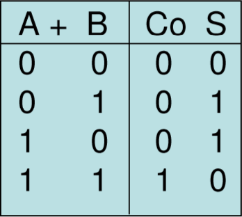
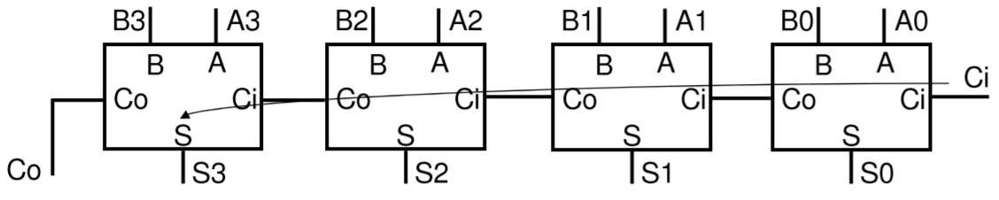
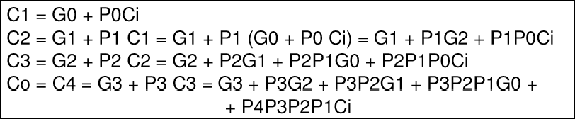

Es todo circuito o dispositivo que genera una serie de combinaciones a sus salidas sincronizadas por una señal de reloj externa.
Según el comportamiento con la señal de reloj:
-Contadores asincrónicos.
-Contadores sincrónicos.
Según el formato de salida del conteo:
-Binario
-BCD (Decimal Codificado en Binario)
-Arbitrario
Formado en principio por Flip-Flopsy lógica combinatoria adicional. Se llaman asíya que la señal externa de reloj en general se conecta a la entrada de un solo Flip-flopy se propaga luego internamente. La ventaja es su sencillez. Su principal desventaja es su limitada velocidad de respuesta que depende fuertemente de la cantidad de bits que maneje.
Formado en principio por Flip-Flopsy lógica combinatoria adicional. Se llaman asíya que la señal externa de reloj en general se conecta a las entradas de reloj de todos los Flip-flopsimultáneamente. La ventaja es su mayor velocidad de respuesta respecto al asincrónico. Su relativa desventaja es su mayor complejidad circuitaly consumo de energía.
Dado que la señal de reloj de cada FF se obtiene de la salida del FF anterior existe una cadena de retardos en las respuestas.
El primer FF es que reacciona mas rápido al cambio del CLK y así sucesivamente por lo que el último FF es el que define la velocidad de respuesta del contador.
A mayor número de bits, mayor retardo. Los peores casos son para los conteos en donde cambia el FF mas significativo (el último). Existen los denominados códigos inválidos que son valores en las salidas que están todavía en transición.
Por ejemplo en el pasaje de conteo de 3 a 4 y de 7 a 8, Q2 cambia y se generan las respuestas más lentas (3 retardos de FF).
Los circuitos digitales sumadores realizan la suma aritmética de dos números enteros positivos, normalmente descritos en notación posicionalbinaria, aunque pueden desarrollarse sumadores para otros formatos de descripción numérica.
Los sumadores son un elemento crítico en el desarrollo de circuitos aritméticos por lo que se han desarrollado numerosas estructuras que buscan la mejora de las prestaciones del circuito, balanceando entre su tamaño y su velocidad.
Para operandos A y B de un bitya se han desarrollado en otros temas el sumador completo (“full-adder”) con acarreo de entrada (Ci) y el semi-sumador (“half-adder) sin acarreo de entrada. Los bits de salida serán la salida de suma S y el acarreo de salida (Co).
El primer bit se puede construir con un semisumador mientras que los demás bits requieren un sumador completo, en este caso se tiene un semisumador de N bits.
Si en el primer bit se utiliza un sumador completo, el circuito dispone además de acarreo de entrada Ciy se tiene un sumador completo de N bits. Tener acarreo de entrada permite un mejor funcionalidad del circuito, como por ejemplo poner en serie dos (o más) sumadores de N bits para formar un sumador de 2N bits.
En cualquier caso se tienen N+1 bits de salida: N de suma S y un acarreo de salida Co.
El tiempo de propagación de este sumador es proporcional al número N de sumadores en serie.
Otra solución es llevar la estructura de “carrylook-ahead” a más niveles, la expresión de Cotambién se puede poner de la forma:
Co= G + P Ci, siendo
Co= G3 + P3G2 + P3P2G1 + P3P2P1G0 + P4P3P2P1Ci, luego
G = G3 + P3G2 + P3P2G1 + P3P2P1G0
P = P4P3P2P1
Donde G y P son el “carry-generate” y el “carry-propagate” de una suma de 4 bits. Si se añaden las ecuaciones de G y P a T2 se pueden realizar sumadores de 16 bits con esta estructura, que se puede llevar a más bits utilizando más niveles de T2 (64 bits, 4 grupos de 16 con un nivel más).
El sumador “ripple” es un sumador lento. Para construir sumadores rápidos hay que intentar paralelizar el cálculo de los acarreos. El método “carrylook-ahead” genera los acarreos en paralelo obteniendo su expresión lógica de forma recursiva:
Para cada bitj se obtiene de Aj y Bj en paralelo el “Carry-Propagate” Pj que indica las condiciones bajo las cuales el acarreo se propagade la entrada a la salida, y el “Carry-Generate” Gj que indica las condiciones bajo las cuales se genera acarreo de salida independientemente del acarreo de entrada.
Co= G + P Ci, hay acarreo si se genera o si se propaga con Cia 1.
